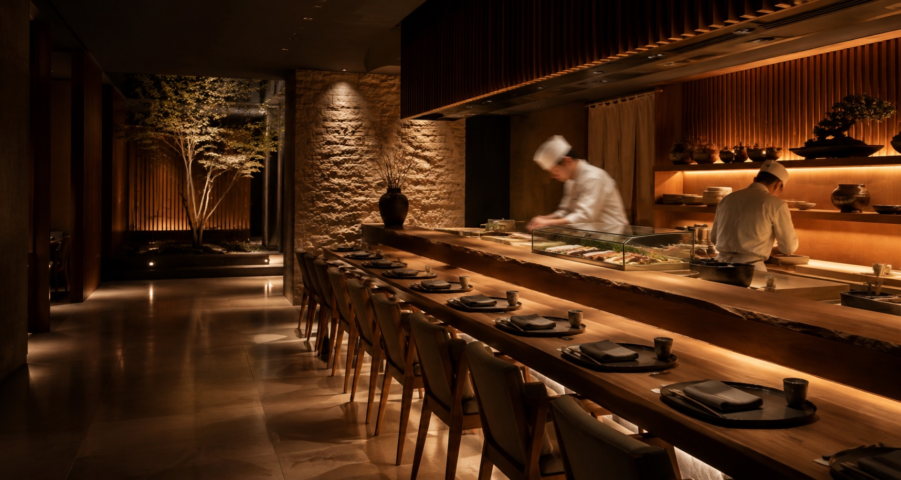
MISONO
The Art of Japanese Dining
A unique experience
The counter is the whole room — the fish, the knife, and the hands that join them, close enough to watch. Courses come one piece at a time, in the order the chef decides, for as long as you are hungry.
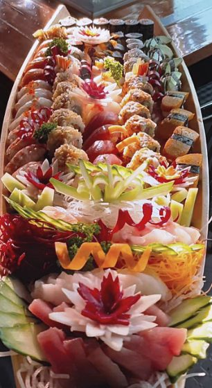
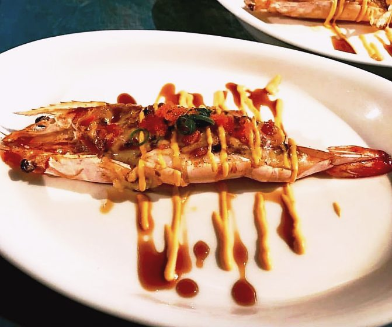
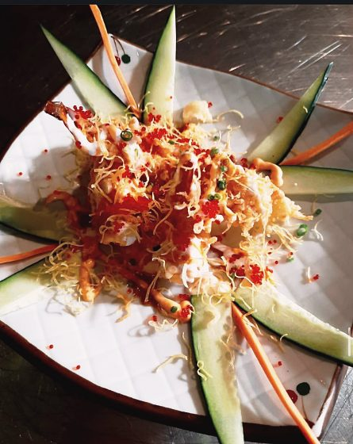
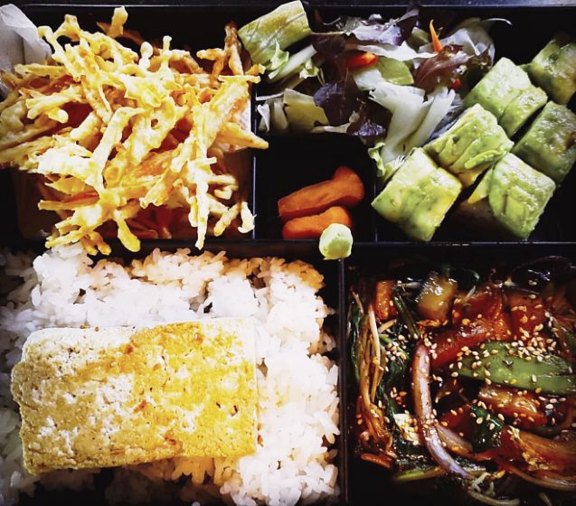
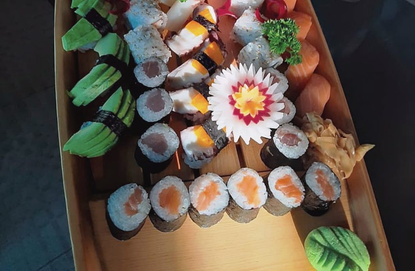
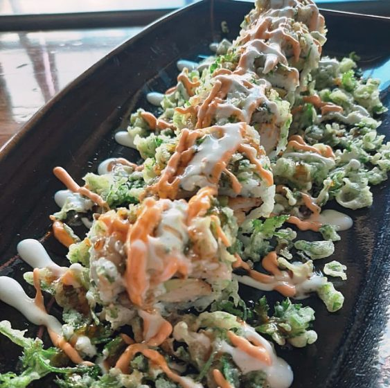
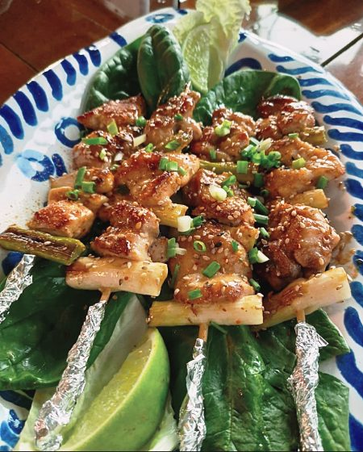
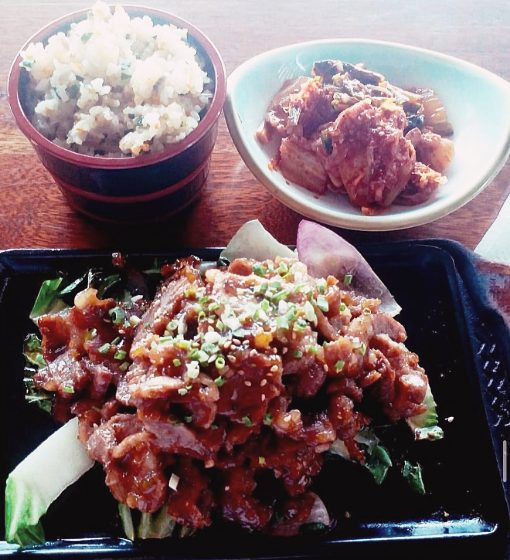
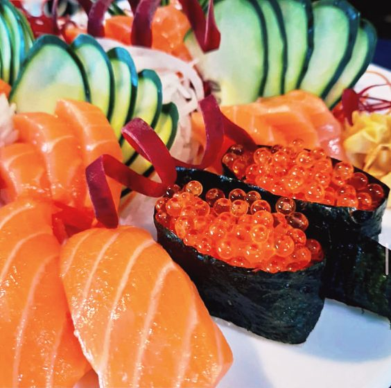
Special Menu
Chirashi Sushi
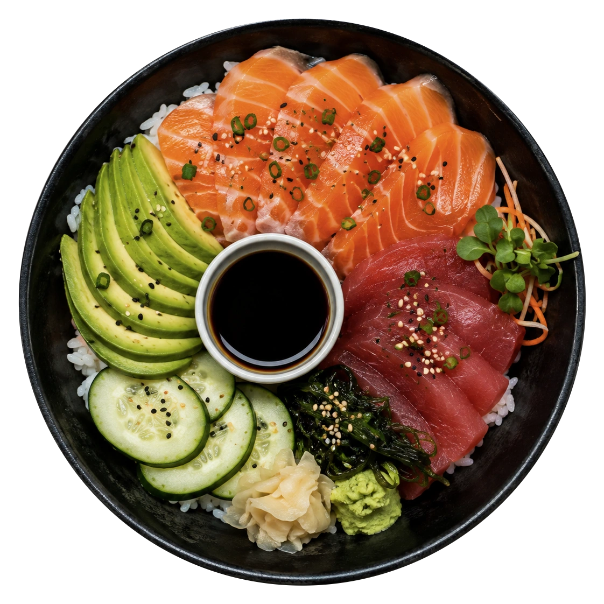
Neta
The fish. Salmon and akami, sliced thick against the grain and laid over the rice in the order it is meant to be eaten.
Shari
The rice. Warm, loosely packed, and seasoned so lightly it reads as sweetness rather than vinegar.
Yakumi
The seasonings. Wasabi grated to order on sharkskin, ginger cured in our kitchen, sesame toasted the same morning.
Tsuma
The garnish. Avocado, cucumber and wakame, cut to clear the palate between one piece and the next.
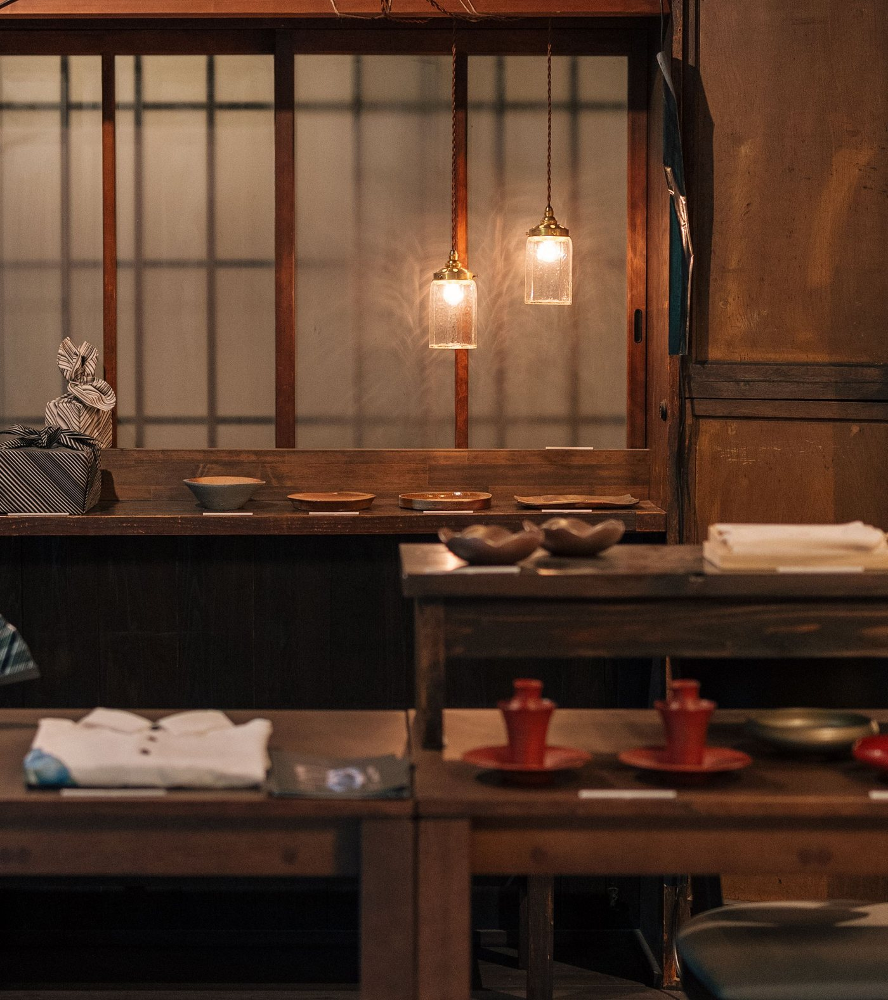
Reserve
Reserve
your table
A counter, a season, and a chef who decides the order. Tell us when you would like to sit and how many are coming — the evening is arranged from there.
Reserve nowOpens WhatsApp · message already written